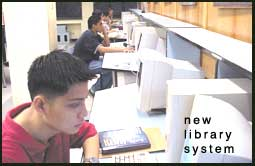

Systems
Management Office : Updates
The
New Library System
Training of library personnel and ITC staff is ongoing in
preparation for the use of the Millennium System, the new
library system which will be made available to users on the
3rd term of the current school year. Trainings were conducted
for the modules on Introduction to Circulation Parameters
and Basic Systems Administration, Cataloging and Serials Training.
These trainings were conducted last July 2-4, August 13-14
and September 10-11, respectively. Testing is also being done
for other modules.
Payment Management Module (PAY)
Beginning September 25, 2003 students can already request
for official documents from the Registrar’s Office on-line.
This was made possible through the Online Payment Module where
students can request for the delivery of their transcript
of records and diploma. The documents will be delivered to
the student at rates posted on-line to anywhere in the Philippines
and as far as Africa.
ExtraCurricular Information System
(XIS)
The Events Calendar Module design is already through and will
be implemented this term. This is a scheduling tool developed
for posting of activities by designated members within the
organizations. The Access Assignment and Membership Maintenance
modules are also scheduled for design and implementation this
term. The Access Assignment Module serves as an admin capable
of granting user access to the system while the Membership
Maintenance Module involves attendance tracking of students
to activities and monitoring of their performance and participation
in general.
My.LaSalle (MLS)
The Systems Management Office (SMO) personnel are preparing
for the transfer to the Sharepoint Portal from the My.Lasalle
Portal. They have already started discussions on user interface
design conventions, testing procedures and the setup of the
programming libraries. In line with this, trainings are scheduled
for the SMO software development team for ASP.Net and Unified
Modeling Language (UML).
Research Monitoring (REM)
The development of the Research Monitoring System was proposed
to achieve the goal of the University to have a centralized
database, which will record all research projects in the University.
This system was requested by the University Research Coordination
Office (URCO) and is targeted for deployment come 1st term
school year 2004-2005. Currently, development of the system
is ongoing.
ActiveFax and ContaxIVR
The De La Salle University Fax System is already up and running!
It is composed of the ActiveFax and ContaxIVR systems. ActiveFax
is used in sending messages to the intended recipient’s
office fax machine. On the other hand, ContaxIVR converts
the fax message to a picture format (.tif) and sends the fax
message via electronic mail. Assigned office personnel receive
these fax messages and forwards them to the intended message
recipient.
Reservations Monitoring (RMS)
To maximize room usage within the campus, the Reservations
Monitoring System is being developed. It will keep track of
all room use schedules and accept reservations for a room.
Currently, several screen designs have already been conceptualized
but these are still subject to the approval of the Systems
Review Committee.
E-Procurement Portal (EPP)
The Requisition Creation Module of the web-based electronic
procurement system of DLSU is already finished. With the completion
of the Canvassing and Bidding Modules, production is expected
within the first two weeks of October 2003.
|